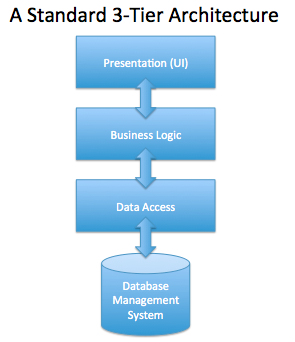

A BRIEF OVERVIEW OF THE n-TIER ARCHITECTURE PATTERN
Separation of Concerns
In the PHP applications we have written to this point, it is pretty common to see HTML mixed right alongside database access and complex manipulations of that data. The advantage of this, is that it can be very quick to get a data-driven web application "working." Yet, there are many downsides to this. Can you think of some?
Most of the problems that occur with this approach stem from not having a "separation of concerns." For example, what happens when a UI developer tries to reformat the code of an SQL query as they are making the page easier to read? Or on the other hand, what if a back-end developer removes code that seemed unnecessary, but was relied upon by a complex JavaScript / HTML process?
Furthermore, if a file contains all these different roles, and it is changed, what pieces need to be re-tested? Even if the change was only a cosmetic UI fix, there is always the possibility that something else was altered, requiring a significantly larger amount of testing. Also, if business logic and data access code is spread across and throughout many files, it is not very modular, is hard to reuse, and is very difficult to maintain.
Thus, the better approach is to separate the concerns, and isolate the different pieces of the application, for example, keep the parts that handle presentation together, and the parts that handle data access together, and only have a minimal interface between the two. This is another instance of the classic programming mantra of strong cohesion and loose coupling.
A Layered Approach
One approach to separating these concerns is to create separate "layers" in our code. For example, there is a layer that contains all the logic, and data needed for presentation (i.e., all of the HTML, CSS, JavaScript resides here). Beneath it, there is a layer that exclusively handles the "business" logic of the application, or in other words the core data objects of our application and the rules and relations among them. Then, we may have another layer that handles data access, having complete responsibility for interfacing with the database or file system. See the following diagram:
There are a few things to note about this design. First, each layer only interacts with the adjacent layers. The presentation layer cannot directly access the database layer, it must instead access code in the business logic layer, which can access the data layer. Second, code should be written in such a way that there are only downward dependencies. In other words, the business logic layer should not depend on any classes from the presentation layer. The business layer does not know or care how the presentation happens.
In addition, the business layer, knows only enough about the data access layer to know how to call it. The actual process of accessing the data is completely hidden from it. Ideally, this is done by making the interface between the layers and actual "interface" in Java (or other languages), and then the specific classes that actually have the code must implement the interface. (This also enables dependency injection, where the actual classes are not determined until runtime, but we will not discuss that here).
The advantages of this approach are that if your company decides to completely redesign the UI of the application nothing in the other layers needs to be touched. Similarly, if your company decides to switch from MySQL to Oracle or to a NoSQL database, there should be very little in the UI or Business layer that would need to change.
Another advantage is that it is often much easier to write automated tests that use code in the business layer than it is the UI layer. Thus, the core features of the application can be extensively tested from the business logic layer, and testing of the UI only needs to validate the functioning of the UI layer.
n-Tier vs. n-Layer
To this point, we have been discussing a logical separation of the code, or in other words, a conceptual way of dividing responsibilities among different classes. In the Web context, it is also possible (and common with large scale applications) to put these layers on completely separate servers, or even farms of servers with load balancers in between the layers to distribute the workload.
Sometimes there is a distinction made between n-Tier and n-Layer approaches, where n-Tier relates to physical separation of servers, etc., whereas n-Layer relates to logical separation, but from our perspective the concepts are essentially the same.
n-Tier and MVC
It is often easy to confuse an n-Tier approach with MVC (Model-View-Controller). These patterns have many similarities with regard to separating concerns, but are not the same, and are often used in combination with one another. It is a mistake to think that Presentation means View, Business Logic means Controller, and Data Access means Model.
Model-View-Controller is a design pattern for separating concerns in UI interaction. In so doing, both the View and the Controller must reside in the presentation layer. Depending on the application the model may partially reside in the presentation layer, or it may end up being more synonymous with the business logic layer.
It is a common misconception to think that the Model is nothing more than a data object with no real methods or properties. In many ways, it can refer to a complete layer similar to the business logic layer described above. See the first answer at this link for more information: http://stackoverflow.com/questions/5863870/how-should-a-model-be-structured-in-mvc
Language Agnostic
As we move forward with Java web development, we will be paying particular attention to separating the concerns in our code, and using MVC and n-Tier approaches. However, it is worth explicitly saying that the same concepts can (and should!) be applied to PHP or any other language. The common pitfalls of PHP containing "spaghetti code" are not so much the fault of PHP, as much as a consequence of how easy it is to get things up and going quickly, how easy it is to mix the concerns, and how easy it is for inexperienced programmers to get into PHP.